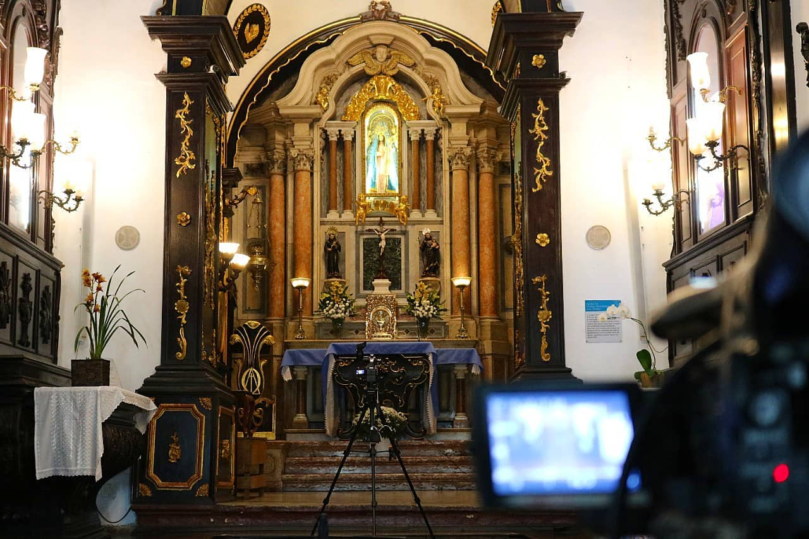

Em um penhasco de 154 metros de altitude e localização privilegiada, a 500 metros do mar, que ostenta no seu entorno um imponente fragmento da Mata Atlântica, está edificado o Santuário de Nossa Senhora da Penha, fundado pelo Frei Pedro Palácios, que chegou ao Espírito Santo em 1558, trazendo consigo o Painel de Nossa Senhora das Alegrias. O monumento apresenta em sua trajetória histórica muitas reconstruções, como a excepcional concepção arquitetônica do Convento, elevado sobre a rocha do morro, abrindo as janelas de suas celas para o magnífico panorama de Vitória e do Oceano Atlântico, enquanto de sua fachada se tem bela vista panorâmica de Vila Velha. No início, Frei Pedro Palácios encontrou abrigo numa gruta de pedra, que mais tarde passou a levar seu nome. Em 1562, construiu uma capela dedicada a São Francisco de Assis, no local hoje denominado Largo do Convento (Campinho). E, em 1568, foi edificada, no cume do penhasco, a Capela que recebeu a imagem de Nossa Senhora da Penha,vinda de Portugal em 1569. O espaço sofreu várias ampliações, e anexo, foi construído, em várias etapas, o Convento da Penha, juntamente com o prédio do museu que é a histórica ex-casa dos romeiros, a residência de hóspedes, e as ruínas das antigas senzalas, cuja pedra fundamental data de 1650.
 A igreja é o espaço mais expressivo do interior do Convento com sua preciosa capela-mor. Revestido parcialmente com madeira em cedro e entalhado com motivos fitomorfos (com estrutura semelhante à das plantas), o espaço interno foi executado pelo português José Fernandes Pereira, entre 1874 e 1879. No altar-mor do templo, remodelado em 1910, há mais de 200 peças de 19 tipos diferentes de mármore que adornam o retábulo e as colunas. No centro do retábulo está localizado o nicho de Nossa Senhora, que abriga a imagem da Virgem da Penha, de origem portuguesa, de 1569. Ladeada por anjos e querubins, ela é honrada com as imagens dos maiores santos franciscanos: São Francisco de Assis e Santo Antônio de Lisboa e de Pádua. As paredes são enobrecidas pelas primorosa sobras paisagísticas do Convento da Penha, realizadas por Vitor Meireles e encomendadas por Frei João Costa, entregues em 1877; além das obras sacras de Pedrina Calixto, de 1926 a 1927.
O santuário testemunha, desde os primórdios do povoamento da terra capixaba, a trajetória histórica evangelizadora dos religiosos da Ordem dos Frades Menores da Província Franciscanada Imaculada Conceição do Brasil e, também, a devoção a Nossa Senhora da Penha, padroeira do Espírito Santo. Patrimônio histórico cultural, O conjunto do Convento da Penha foi tombado como patrimônio histórico cultural em 1943, tendo seu altar-mor restaurado entre 2009 e 2011. O projeto esteve sob a coordenação dos restauradores Ailton Tadeu Costa e Catarina de Cássia Zambe Costa.“Encontramos duas camadas de tinta e em cima do douramento do altar,e algumas partes estavam comidas por cupim. Abrimos pedaços na estrutura para encontrarmos uma sequência lógica para o trabalho de restauração. Usamos resina para restaurar os defeitos”, revelou Aílton.
Outro grande destaque é a faixa de Mata Atlântica existente no Santuário da Penha, é totalmente preservada e cuidada pelos Frades Franciscanos. considerada o mais importante pulmão verde da cidade de Vila Velha, abrigando variada flora e fauna em 50 hectares (o que corresponde a mais de 50 campos de futebol). Além de muitas espécies de répteis, há saguis e aves no morro. Mas nem sempre foi assim. Na segunda metade do século XX, a mata da Montanha Sagrada estava bastante devastada. Foi a partir de 1970 que começou a preocupação com o reflorestamento do morro, com o plantio de árvores nativas, reprodução de pássaros e animais deste tipo de ambiente e etc. Milhares de mudas de árvores nativas foram plantadas, fazendo com que atualmente o verde da flora realce o branco das paredes do Convento no Alto da Penha.
Realizada todos os anos, oito dias após o domingo de Páscoa, a Festa da Penha reúne milhares de fiéis e turistas que vão ao Convento da Penha e ao Sítio Histórico da Prainha para assistir as missas celebradas no Campinho e participar das romarias de – homens, mulheres, motociclistas, cavaleiros – e dos shows.
O evento é considerado como a maior festa religiosa do Espírito Santo e a terceira maior do país em números de fiéis. Há 17 anos, o médico obstetra Osmar Salles divide o tempo entre os partos e o trabalho voluntário de fazer o terço gigante, que fica pendurado entre as duas palmeiras no Campinho do Convento da Penha, em Vila Velha,durante a Festa da Penha. O trabalho, que conta com uma equipe de voluntários, é bastante apreciado durante os festejos da padroeira.